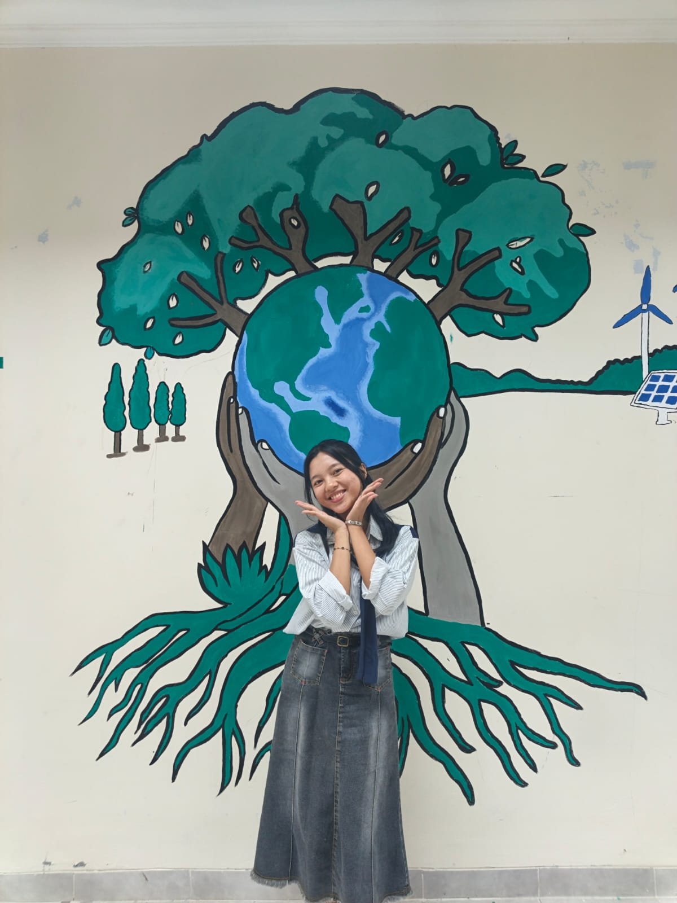

PENGINDERAAN JAUH
Meneropong & Menganalisis Rahasia Permukaan Bumi dari Angkasa dengan Teknologi Satelit Interaktif!

Identitas Penjelajah Geo
Isi data dirimu sebelum memulai misi analisis citra satelit!
Tujuan Pembelajaran & Alur Konsep
Capaian & Tujuan Pembelajaran (TP)
- 1 Memahami pengertian serta prinsip kerja dasar sistem Penginderaan Jauh.
- 2 Mengidentifikasi 6 Komponen Penginderaan Jauh (Tenaga, Atmosfer, Objek, Sensor, Data, Pengguna).
- 3 Membedakan karakteristik Citra Foto dan Citra Non-Foto.
- 4 Menganalisis manfaat Penginderaan Jauh di bidang Meteorologi, Peta, Kehutanan, Kelautan & Pertanian.
- 5 Menerapkan 8 Unsur Interpretasi Citra untuk mengenali objek di permukaan bumi.
Gambaran Umum Alur Kerja Penginderaan Jauh
Uraian Materi Penginderaan Jauh
Sumber Referensi Resmi: Brain Academy Geografi
Apa itu Penginderaan Jauh? (Remote Sensing)
Penginderaan Jauh adalah ilmu dan seni untuk memperoleh informasi mengenai suatu objek, daerah, atau fenomena di permukaan bumi melalui analisis data yang diperoleh dengan alat perekam (sensor) tanpa kontak langsung dengan objek tersebut.
Penginderaan Jauh Pasif
Menggunakan sumber energi alami (cahaya matahari). Sensor menangkap pantulan sinar matahari dari objek di bumi pada siang hari.
Penginderaan Jauh Aktif
Menggunakan sumber energi buatan seperti kilatan radar atau pulsa cahaya buatan. Bisa beroperasi pada malam hari atau menembus awan tebal.
6 Komponen Utama Sistem Penginderaan Jauh:
Penyedia pencahayaan (Matahari / Gelombang Mikro Radar).
Media perantara tenaga. Hanya gelombang tertentu (jendela atmosfer) yang lolos.
Target yang diamati (hutan, laut, pemukiman, jalan raya).
Alat perekam (Kamera/Scanner) & Kendaraannya (Satelit/Pesawat/Drone).
Data visual (foto) atau data digital (angka piksel untuk komputer).
Manusia/lembaga penentu keputusan (BMKG, BIG, Perencana Kota).
Perbedaan Citra Foto dan Citra Non-Foto
| Kriteria | Citra Foto | Citra Non-Foto |
|---|---|---|
| Sensor | Kamera fotografik | Non-kamera (Scanner / Radar) |
| Detektor | Film fotografi | Pita magnetik / Detektor elektronik |
| Proses Perekaman | Fotografik (Kimiawi) | Elektronik / Spektrometri |
| Spektrum Gelombang | Tampak mata (Visible) & Inframerah dekat | Inframerah termal, Gelombang Mikro, Radar |
Manfaat Penginderaan Jauh di Berbagai Bidang:
Cuaca & Iklim
Memantau suhu, kelembaban, pola angin, dan meramalkan cuaca (BMKG).
Pembuatan Peta
Pemetaan kontur, tata ruang kota, dan perencanaan infrastruktur presisi.
Kehutanan
Mendeteksi kebakaran hutan, penebangan liar (deforestasi), & konservasi.
Kelautan & Oceanografi
Mengamati arus laut, suhu permukaan air, dan lokasi zona potensi ikan.
Pertanian
Memantau kesehatan tanaman, tingkat kesuburan tanah, dan estimasi panen.
8 Unsur Interpretasi Citra Geografi:
Gim Edukasi Penginderaan Jauh
Selesaikan 3 Tantangan Gim untuk Memperoleh Sertifikat Geo-Explorer!
Loading Pertanyaan...
Klik 1 Istilah di Kiri, lalu klik Pasangan Definisi yang Tepat di Kanan!
Terjodohkan: 0/4Pilih item di atas, lalu klik Tombol Kategori yang sesuai!
Terklasifikasi: 0/6CITRA FOTO
CITRA NON-FOTO
Refleksi, Evaluasi & Sertifikat
Hasil Evaluasi Belajar Penginderaan Jauh
Refleksi Diri Murid
Rangkuman Nilai Akhir
Sertifikat Kelulusan Misi
Cetak sertifikat resmi digital kamu sebagai bukti penuntasan materi Penginderaan Jauh Geografi!
Gracella Renata
Profil Pengembang